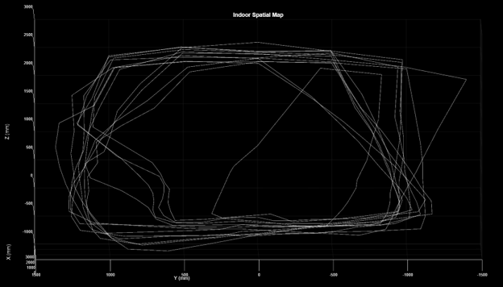

Projects / PROJ-2DX3-LIDAR
3D Indoor Spatial Mapper
1.0Overview
This project is a LIDAR-style scanner that maps indoor spaces in three dimensions. A VL53L1X time-of-flight distance sensor is mounted on a 28BYJ-48 stepper motor and rotated through a full 360°, sampling distances at fixed angular increments. An MSP-EXP432E401Y microcontroller orchestrates the whole system: driving the motor, reading the sensor over I²C, and streaming measurements to a PC over UART. On the PC side, MATLAB converts each (angle, distance) sample into Cartesian coordinates and renders the scanned environment as a 3D point cloud.

2.0System Architecture
The system is a pipeline with three stages:
- Acquisition — the VL53L1X measures distance by timing the return of an emitted infrared pulse. The MCU polls it over I²C at each angular step.
- Actuation & control — the stepper motor advances the sensor by a fixed angular increment per sample; the firmware keeps the motor position and measurement index synchronized so every distance value has a known angle. Vertical displacement between scan planes provides the third dimension.
- Transmission & reconstruction — samples are framed and sent over UART. MATLAB parses the stream, applies the trigonometric transform from polar samples to (x, y, z) points, and renders the point cloud.
| MCU | TI MSP-EXP432E401Y (ARM Cortex-M4F) |
|---|---|
| Sensor | ST VL53L1X time-of-flight, I²C interface |
| Actuation | 28BYJ-48 stepper motor + ULN2003 driver board |
| Data link | UART (MCU → PC) |
| Reconstruction | MATLAB, 3D point-cloud rendering |
| Firmware | C |
3.0Engineering Challenges
The most instructive problems in this project were integration problems — each subsystem worked alone, and the difficulty was making them work together:
- Motor / I²C interference. Driving the stepper corrupted I²C transactions with the sensor. Debugging this required isolating when communication failed relative to motor activity and restructuring the firmware so sensor reads and motor stepping did not conflict.
- UART framing. Getting a reliable, parseable stream into MATLAB meant defining a consistent message format and handling the boundary cases where data arrived split across reads.
- Coordinate reconstruction. Mapping (step index, distance) into a consistent 3D frame required careful bookkeeping of angular position, scan-plane height, and sensor orientation — errors here showed up visually as warped or spiraled point clouds, which made MATLAB rendering a useful debugging tool.
Documentation
The full system; hardware, firmware architecture, communication protocols, and results was documented in an IEEE-style technical report, including block diagrams, flowcharts, and analysis of measurement accuracy.
4.0Takeaways
This was my first complete embedded system: sensing, actuation, communication, and visualization in one loop. The biggest lesson was that embedded debugging is about forming hypotheses you can test with instrumentation. It is often best to scope lines, add UART breadcrumbs, and change one variable at a time instead of staring at code.